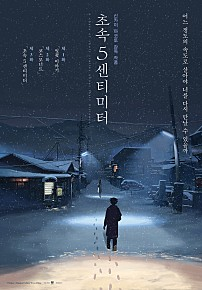

| 포스터
|
제목
|
내용
|
링크
|
|
|
어바웃 타임 |
영화 "어바웃 타임(About Time)"은 미래에서 자신의 과거를 변경할 수 있는 시간 여행이 가능한 남자의 이야기를 줄거리로 다룬 작품이다. 특별한 능력을 가진 이 남자가 첫눈에 반한
여자와의 완벽한 사랑을 이루기 위해 시간여행을 한다는 판타지 스토리를 다루고 있다.
|
링크
|
|

|
초속 5cm |
영화 어느 정도의 속도로 살아가야 너를 다시 만날 수 있을까?
초등학교 졸업과 동시에 떨어져 있게 된 ‘타카키’와 ‘아카리’.
둘만의 특별한 추억만 남은 채 시간이 흐른다.
폭설이 내리던 어느 날 밤,
‘타카키’는 ‘아카리’를 찾아 나서는데…
|
링크
|
|
|
너의 이름은 |
아직 만난 적 없는 너를, 찾고 있어
천년 만에 다가오는 혜성
기적이 시작된다
도쿄에 사는 소년 ‘타키’와 시골에 사는 소녀 ‘미츠하’는
서로의 몸이 뒤바뀌는 신기한 꿈을 꾼다
낯선 가족, 낯선 친구들, 낯선 풍경들...
반복되는 꿈과 흘러가는 시간 속, 마침내 깨닫는다
우리, 서로 뒤바뀐 거야?
절대 만날 리 없는 두 사람
반드시 만나야 하는 운명이 되다
서로에게 남긴 메모를 확인하며
점점 친구가 되어가는 ‘타키’와 ‘미츠하’
언제부턴가 더 이상 몸이 바뀌지 않자
자신들이 특별하게 이어져있었음을 깨달은
‘타키’는 ‘미츠하’를 만나러 가는데...
잊고 싶지 않은 사람
잊으면 안 되는 사람
너의 이름은?
|
링크
|

|
이터널 선샤인 |
영화
사랑은 그렇게 다시 기억된다..
조엘은 아픈 기억만을 지워준다는 라쿠나사를 찾아가 헤어진 연인 클레멘타인의 기억을 지우기로 결심한다. 기억이 사라져 갈수록 조엘은 사랑이 시작되던 순간, 행복한 기억들, 가슴 속에 각인된
추억들을 지우기 싫어지기만 하는데... 당신을 지우면 이 아픔도 사라질까요? 사랑은 그렇게 다시 기억된다.
|
링크
|

|
아바타 : 물의 길 |
아바타: 물의 길 은 판도라 행성에서
'제이크 설리'와 '네이티리'가 이룬 가족이 겪게 되는 무자비한 위협과
살아남기 위해 떠나야 하는 긴 여정과 전투,
그리고 견뎌내야 할 상처에 대한 이야기를 그렸다.
월드와이드 역대 흥행 순위 1위를 기록한 전편 아바타에 이어
제임스 카메론 감독이 13년만에 선보이는 영화로,
샘 워싱턴, 조 샐다나, 시고니 위버, 스티븐 랭, 케이트 윈슬렛이 출연하고
존 랜도가 프로듀싱을 맡았다.
|
링크
|